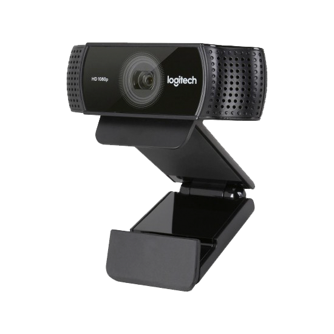
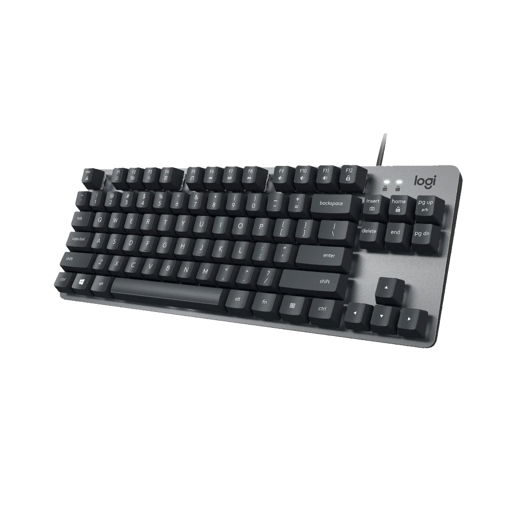
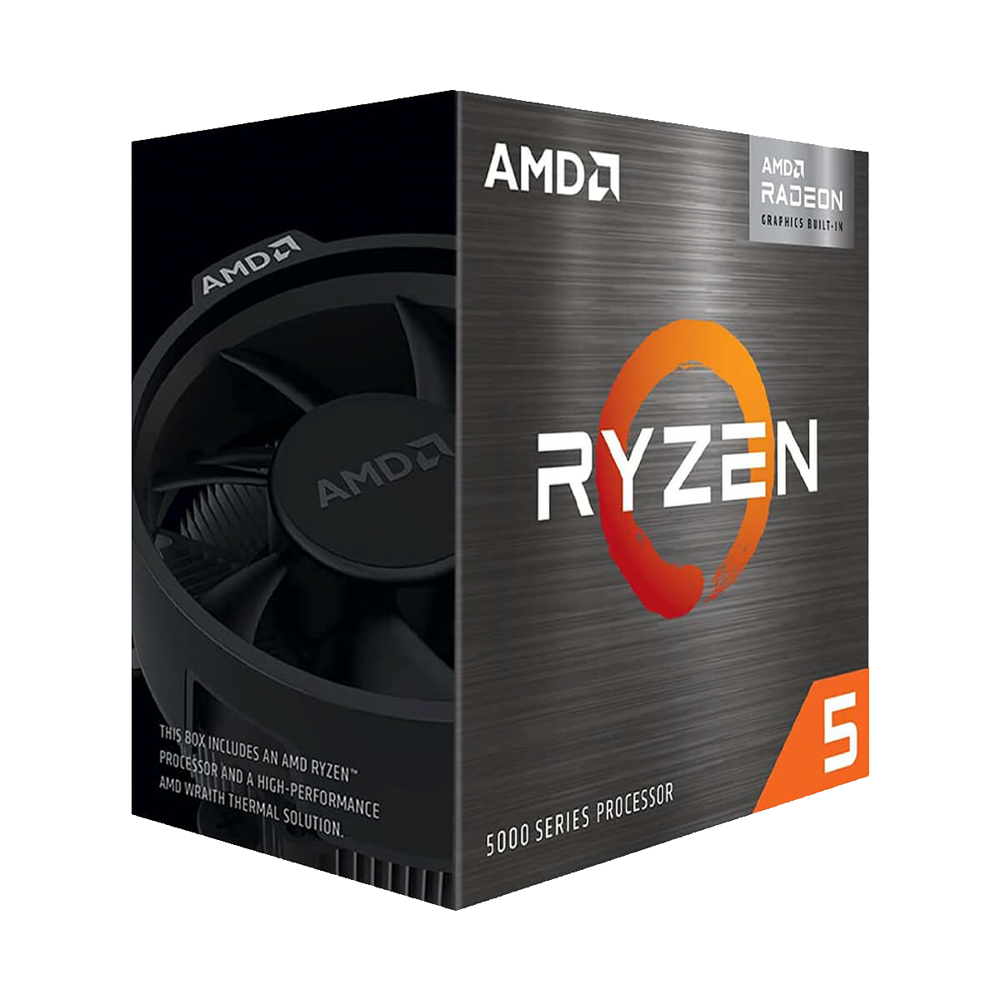
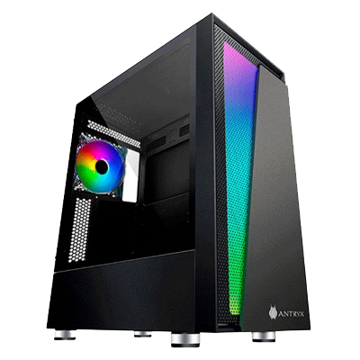
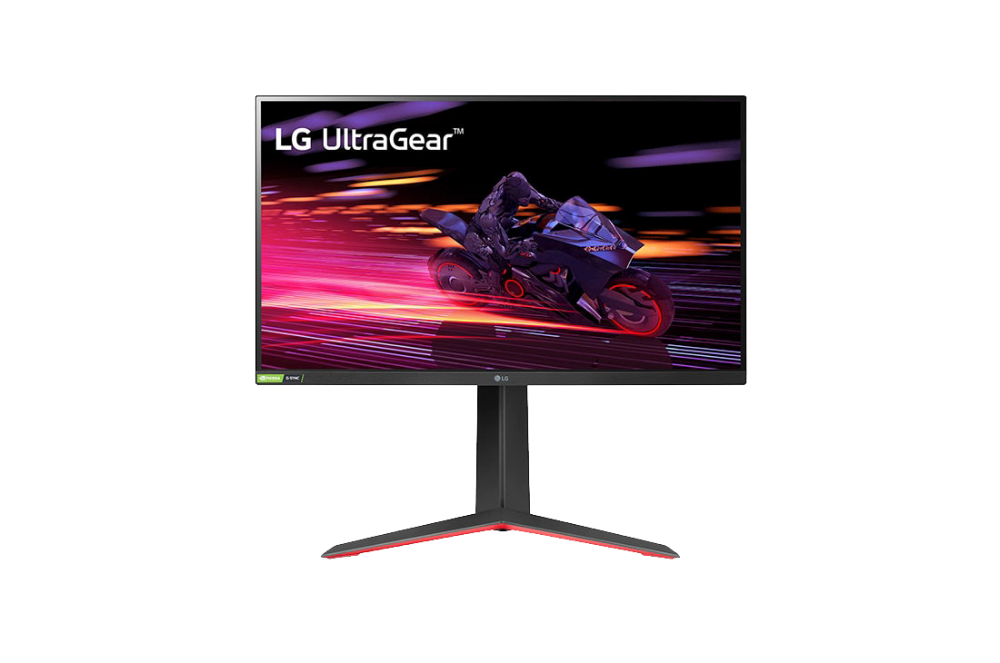
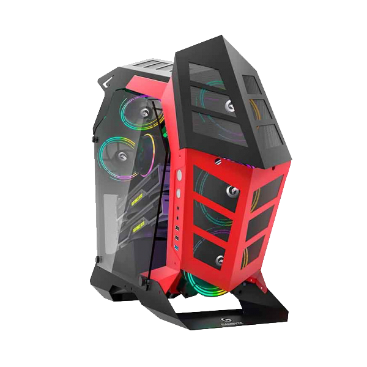
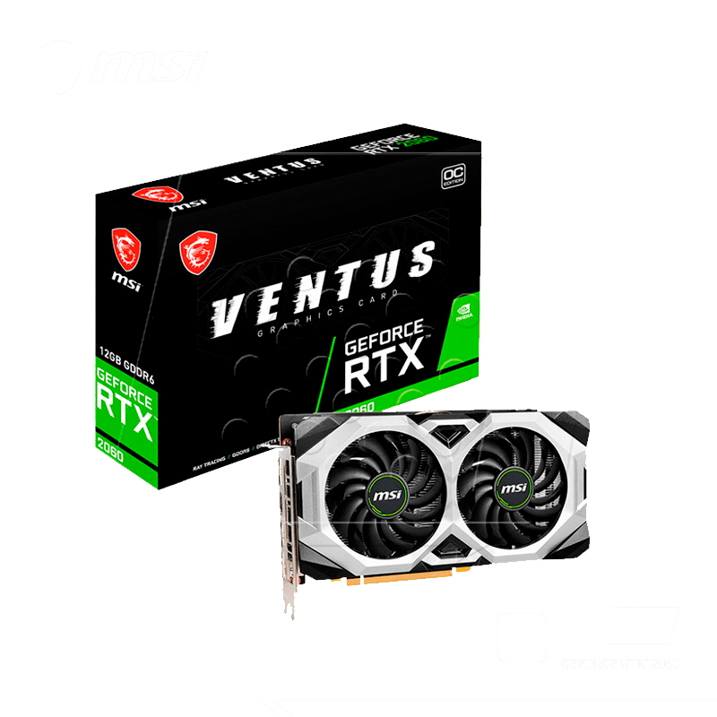
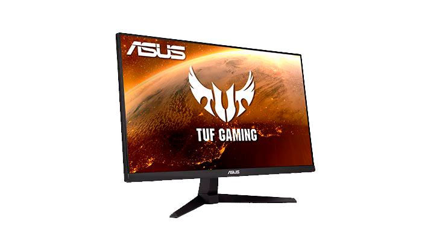
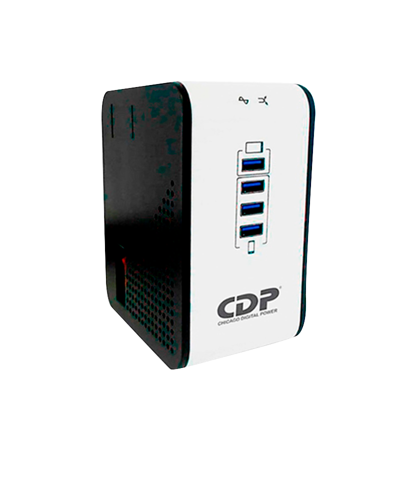

Conexión extremadamente nítida en directo para canales como Twitch y YouTube. Haz streaming de lo que quieras y elige entre Full HD 1080p
leer más

K835 TKL MECÁNICO
La sensación de escritura mecánica que tanto te gusta.
leer mas

Ryzen 5 1600X, chip que ofrece seis núcleos y 12 hilos con una frecuencia base de 3.6 Ghz y modo Boost de 4 Ghz.
leer más

Case Antryx RX Chrome Storm RX-450 ARGB, Panel Vidrio Efectos de luz ARGB: Incluye 1 ventilador ARGB + barra de luz ARGB y controlador de 4 puertos, con más patrones y más modos de color
leer más

Monitor Gamer UltraGear 27” IPS 240HZ 1MS NVIDIA G-SYNC Compatible Pantalla Full HD de 27 pulgadas (1920 x 1080)
leer más

Material: SPCC 1.20mm Laterales: Vidrio transparente/polarizado de 4mm Estructura: Metal Aluminio Controladora: SI / 6 FAN FAN: Conexión MB ARGB / reset leer más

La MSI GAMING GeForce RTX 2060 ofrece una experiencia de juego fluida y sin desgarros a velocidades de actualización de hasta 240 Hz, además de HDR y mucho más.
leer más
EL Blue Snowball ICE
es la forma más rápida y sencilla de conseguir un sonido de alta calidad para grabaciones y streaming.
leer mas

La Intel Core i7-10700K Con la tecnología Intel Turbo Boost Max 3.0, están optimizados para jugadores entusiastas y creadores serios y ayudan a ofrecer overclocking de alto rendimiento para un impulso adicional.
leer más

El ASUS VG247Q1A es un monitor gamer Full HD(1920x10809) con 165 Hz Diseñado para jugadores profesionales y juegos inmersivos.
leer más

El nuevo regulador de Voltaje R2CU, cuenta con un exclusivo cargador inteligente de 4 puertos USB para tabletas portátiles, teléfonos inteligentes, altavoces, bluetooth, convirtiendo a esta serie en la mas completa y de mejor calidad.
leer más
Vaya más allá de RGB con ARGB, cada LED se control individualmente presentando más patrones y más efectos de color.
leer más